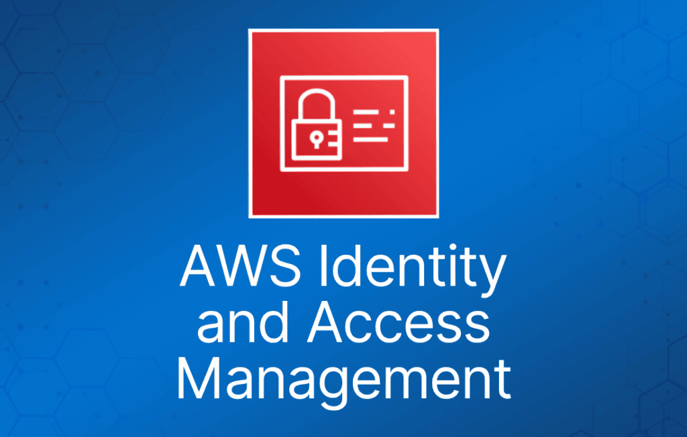
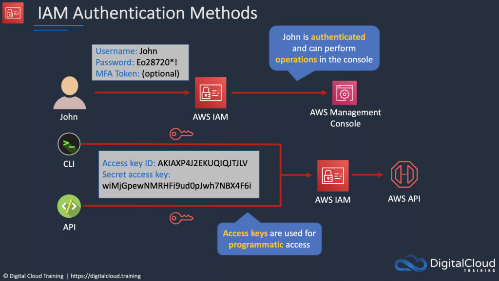
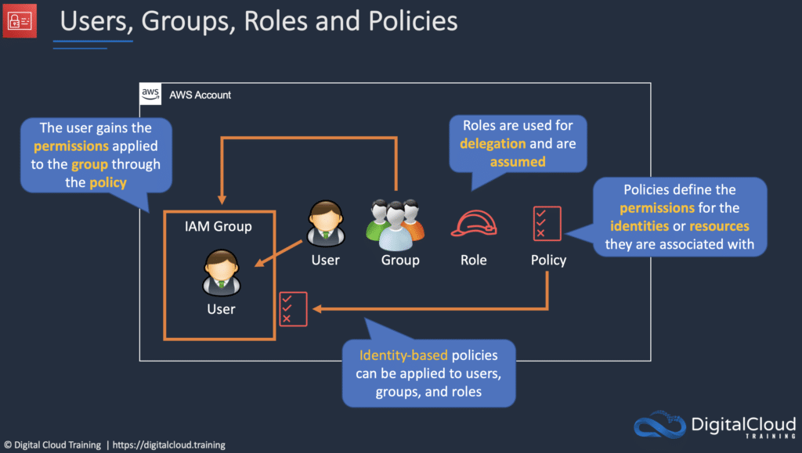

AWS Identity and Access Management (IAM) 是一项功能强大的服务，允许用户安全地管理对 AWS 资源的访问。
IAM 是 AWS 安全的核心组件，使管理员能够控制谁可以访问哪些资源，以及如何访问。
Amazon IAM 还提供了一系列功能，帮助组织满足安全与合规要求，例如多因素认证和基于角色的访问控制。
了解 AWS IAM 的关键特性和优势，以及它如何帮助企业改善云中的安全态势。
什么是 AWS IAM？
AWS Identity and Access Management (IAM) 是一项 Web 服务，可帮助你安全地控制对 AWS 资源的访问。
你使用 IAM 来控制谁已通过认证（已登录）并被授权（拥有权限）使用资源。可以把 IAM 看作所有 AWS 资源的控制中心。
IAM 让为多个用户提供对 AWS 资源的安全访问变得简单。
当你首次创建 AWS 账户时，你会从一个对账户中所有 AWS 服务和资源拥有完全访问权限的单一登录身份开始。
这个身份称为 AWS 账户 root 用户，通过你创建账户时使用的电子邮件地址和密码登录来访问。
IAM 可用于管理：
- 用户（Users）。
- 组（Groups）。
- 访问策略（Access policies）。
- 角色（Roles）。
- 用户凭证。
- 用户密码策略。
- 多因素认证（MFA）。
- 用于编程访问（CLI）的 API 密钥。
IAM 提供以下特性：
- 对 AWS 账户的共享访问。
- 细粒度权限。
- 为运行在 Amazon EC2 上的应用程序提供对 AWS 资源的安全访问。
- 多因素认证。
- 身份联合。
- 用于审计保障的身份信息。
- PCI DSS 合规。
- 与众多 AWS 服务集成。
- 最终一致性。
- 免费使用。
你可以通过以下任一方式使用 AWS Identity and Access Management：
- AWS Management Console。
- AWS 命令行工具。
- AWS SDK。
- IAM HTTPS API。
默认情况下，新创建的用户对任何 AWS 服务都没有访问权限——他们只能登录 AWS 控制台。
必须显式授予权限，用户才能访问某个 AWS 服务。
IAM 用户是被授予了 AWS 账户访问权限的个人。
每个 IAM 用户有三个主要组成部分：
- 用户名。
- 密码。
- 访问各种资源的权限。
使用 IAM 可以应用细粒度权限。
可以为用户分配各自的安全凭证，例如访问密钥、密码和多因素认证设备。
IAM 不用于应用程序级别的身份认证。
可以配置身份联合（Identity Federation，包括 AD、Facebook 等），无需创建 IAM 用户账户即可安全访问 AWS 账户中的资源。
可以为 AWS 账户及账户下的单个用户启用/强制使用多因素认证（MFA）。
MFA 使用一种认证设备，持续生成随机的六位一次性认证码。
可以通过以下方式使用 MFA 设备进行认证：
- 通过 AWS Management Console——系统会提示用户输入用户名、密码和认证码。
- 使用 AWS API——在 IAM 策略中添加限制，开发人员可以请求临时安全凭证，并在 AWS STS API 请求中传递 MFA 参数。
- 使用 AWS CLI，通过 STS 获取临时安全凭证（aws sts get-session-token）。
最佳实践是始终在 root 账户上设置多因素认证。
IAM 是通用的（全局的），不区分区域。
IAM 在全球多个数据中心之间复制数据。
“root 账户”是你在创建 AWS 账户时建立的账户。它拥有完整的管理员访问权限，也是默认情况下唯一拥有此权限的账户。
最佳实践是避免将 root 账户用于账单以外的任何操作。
Power user 访问权限允许除 IAM 中组和用户管理之外的所有权限。
临时安全凭证由 AWS 访问密钥 ID、秘密访问密钥和安全令牌组成。
IAM 可以分配临时安全凭证，为用户提供对服务/资源的临时访问。
登录时，除了用户名和密码外，还必须提供账户 ID 或账户别名。
登录 URL 包含账户 ID 或账户别名，例如：
https://My_AWS_Account_ID.signin.aws.amazon.com/console/
或者，你也可以在以下 URL 登录并手动输入账户 ID 或别名：
https://console.aws.amazon.com/
IAM 与许多不同的 AWS 服务集成。
认证方法
控制台密码：
- 用户可输入该密码登录交互式会话，如 AWS Management Console。
- 你可以允许用户更改自己的密码。
- 你可以先禁用所有用户更改密码的选项，再使用 IAM 策略为选定的 IAM 用户授予更改密码的权限，从而只允许他们修改密码。
访问密钥（Access Keys）：
- 由 access key ID 和 secret access key 组合而成。
- 一个用户同一时间最多可分配两个处于激活状态的访问密钥。
- 在程序代码中使用 API，或在命令行中使用 AWS CLI 或 AWS PowerShell 工具时，可使用它们对 AWS 发起编程式调用。
- 你可以创建、修改、查看或轮换访问密钥。
- 创建时 IAM 会返回 access key ID 和 secret access key。
- secret access key 仅在创建时返回一次，如果丢失必须创建新密钥。
- 请确保 access key 和 secret access key 被安全存储。
- 可以通过 IAM 策略（而非控制台）允许用户更改自己的密钥。
- 你可以禁用用户的访问密钥，使其无法用于 API 调用。
服务器证书：
- 可用于向某些 AWS 服务进行身份认证的 SSL/TLS 证书。
- AWS 建议使用 AWS Certificate Manager (ACM) 来配置、管理和部署服务器证书。
- 仅在必须支持 ACM 不支持的区域中的 HTTPS 连接时才使用 IAM。

IAM 用户
IAM 用户是代表个人或服务的实体。
可以分配：
- 用于对 AWS API、CLI、SDK 及其他开发工具进行编程访问的 access key ID 和 secret access key。
- 用于访问管理控制台的密码。
默认情况下，用户无法访问账户中的任何内容。
账户 root 用户凭证是创建账户时使用的电子邮件地址和密码。
root 账户拥有完整的管理权限，且这些权限无法被限制。
root 账户最佳实践：
- 不要使用 root 用户凭证。
- 不要共享 root 用户凭证。
- 创建 IAM 用户并根据需要分配管理权限。
- 启用 MFA。
可以创建代表应用程序的 IAM 用户，这些被称为“服务账户”。
每个 AWS 账户最多可有 5000 个用户。
每个用户账户都有一个友好名称和一个 ARN，用于在整个 AWS 中唯一标识该用户。
同时还会创建一个唯一 ID，仅在你通过 API、Tools for Windows PowerShell 或 AWS CLI 创建用户时返回。
应为每个用户创建独立的 IAM 账户（最佳实践是不共享账户）。
Access Key ID 和 Secret Access Key 与密码不同，不能用于登录 AWS 控制台。
Access Key ID 和 Secret Access Key 只能使用一次，丢失后必须重新生成。
可以定义密码策略，强制密码长度、复杂度等（适用于所有用户）。
可以使用 IAM 策略允许或禁止修改密码的能力。
访问密钥和密码应定期更换。
组（Groups）
组是用户的集合，可以附加策略。
组不是身份，不能在 IAM 策略中被标识为主体。
使用组为用户分配权限。
分配权限时遵循最小权限原则。
组不能嵌套（组中不能再有组）。
角色（Roles）
角色在创建后由可信实体“代入（assume）”，并定义了一组用于发起 AWS 服务请求的权限。
使用 IAM 角色，你可以在不使用永久凭证（如用户名和密码）的情况下，为用户和服务将权限委托给资源。
IAM 用户或 AWS 服务可以代入角色，获取可用于发起 AWS API 调用的临时安全凭证。
你可以使用角色进行委托。
角色本身没有关联任何凭证（密码或访问密钥）。
IAM 用户可以临时代入角色，以获得执行特定任务的权限。
角色可以分配给使用外部身份提供商登录的联合用户。
临时凭证主要与 IAM 角色一起使用，并会自动过期。
角色可以通过控制台临时代入，也可以通过 AWS CLI、Tools for Windows PowerShell 或 API 以编程方式代入。
IAM 角色与 EC2 实例：
- IAM 角色可通过实例配置文件（instance profiles），为运行在 EC2 实例上的应用程序授予发起 AWS API 请求的权限。
- 一个 EC2 实例同一时间只能分配一个角色。
- 角色可以在创建 EC2 实例时或之后的任何时间分配。
- 使用 AWS CLI 或 API 时，必须手动创建实例配置文件（通过控制台则是自动且透明的）。
- 应用程序从实例元数据中检索临时安全凭证。
角色委托：
- 创建一个带有两个策略的 IAM 角色：
- 权限策略（Permissions policy）——为角色使用者授予对资源所需的权限。
- 信任策略（Trust policy）——指定允许代入该角色的可信账户。
- 通配符（*）不能指定为主体。
- 还必须为可信账户中的用户附加权限策略。
策略（Policies）
策略是定义权限的文档，可应用于用户、组和角色。
策略文档使用 JSON 编写（由属性和值组成的键值对）。
默认情况下，所有权限都被隐式拒绝。
应用限制最严格的策略。
IAM 策略模拟器（IAM policy simulator）是一个帮助你理解、测试和验证访问控制策略效果的工具。
Condition 元素可用于应用进一步的条件逻辑。

AWS IAM 角色 vs 策略 vs 组对比
在 AWS IAM 中，角色、策略和组都用于管理对 AWS 资源的访问。
角色定义了一组权限和访问策略，决定用户或 AWS 服务可以执行哪些操作。当你想向第三方实体（如 AWS 服务或 AWS 账户之外的用户）授予对 AWS 资源的（临时）访问权限时，角色非常有用。
而策略是定义一组权限的文档，指定这些权限授予对哪些 AWS 资源的访问。策略可以附加到角色、组或单个用户，以定义它们对 AWS 资源的访问级别。当你想为特定资源或一组资源定义并强制实施特定权限时，策略非常有用。
组是共享相同权限的用户集合。组让一次性管理多个用户的权限变得简单，因为策略可以附加到组并应用于组内所有用户。通过为组分配权限，你可以通过一个操作为多个用户授予或撤销访问权限。
总的来说，角色用于授予对特定资源或服务的访问权限，策略用于定义这些资源或服务的权限，组用于组织和管理具有相似权限的多个用户。角色、策略和组都是 AWS IAM 的关键组件，各自在管理用户对 AWS 资源的访问中发挥着独特作用。
AWS Security Token Service (AWS STS)
AWS STS 是一项 Web 服务，允许你为 IAM 用户或你认证的用户（联合用户）请求临时的、权限受限的凭证。
临时安全凭证的工作方式与 IAM 用户使用的长期访问密钥凭证几乎相同，区别如下：
- 临时安全凭证是短期的。
- 可以配置为持续几分钟到几小时不等。
- 凭证过期后，AWS 不再识别它们，也不允许使用它们发起任何 API 请求。
- 临时安全凭证不与用户一起存储，而是动态生成并在用户请求时提供给用户。
- 当临时安全凭证过期时（甚至之前），如果请求用户仍有权限，可以请求新凭证。
STS 的优势包括：
- 你无需在应用程序中分发或嵌入长期 AWS 安全凭证。
- 你可以为用户提供对 AWS 资源的访问，而无需为他们定义 AWS 身份（临时安全凭证是 IAM 角色和身份联合的基础）。
- 临时安全凭证生命周期有限，因此当不再需要时，你无需轮换或显式撤销它们。
- 临时安全凭证过期后无法重用（你可以指定凭证的有效时长，最长不超过上限）。
用户可以来自三个来源。
- 联合（通常是 AD）：
- 使用 SAML 2.0。
- 基于用户的 AD 凭证授予临时访问权限。
- 无需是 IAM 中的用户。
- 单点登录（SSO）允许用户在不分配 IAM 凭证的情况下登录 AWS 控制台。
- 与移动应用联合：
- 使用 Facebook/Amazon/Google 或其他 OpenID 提供商登录。
- 跨账户访问（Cross Account Access）：
- 允许一个 AWS 账户中的用户访问另一个账户中的资源。
- 要在不同账户中发起请求，该账户中的资源必须附加了包含所需权限的基于资源的策略。
- 或者你必须代入该账户中具有所需权限的角色（基于身份的策略）。
IAM 最佳实践
妥善保管 AWS root 用户访问密钥。
创建独立的 IAM 用户。
尽可能使用 AWS 预定义策略分配权限。
使用组为 IAM 用户分配权限。
授予最小权限。
使用访问级别（access levels）审查 IAM 权限。
为用户配置强密码策略。
启用 MFA。
为运行在 AWS EC2 实例上的应用程序使用角色。
使用角色进行委托，而不是共享凭证。
定期轮换凭证。
移除不必要的凭证。
使用策略条件增强安全性。
监控 AWS 账户中的活动。
云计算工作中与 IAM 的交互
技术行业中的许多不同角色都会直接或间接地与 AWS IAM 打交道。如果你的组织使用 AWS，你会被分配不同的角色，以便访问完成工作所需的服务。
- 拥有管理员权限的用户负责定义用户、组和角色。他们会经常使用 IAM 来管理整个组织的访问。
- 开发人员会调用 AWS 服务来运行他们的程序。他们会在应用程序开发中使用一组访问密钥和秘密密钥。
- 数据库管理员拥有一组允许他们操作不同 AWS 数据库的权限。他们需要相应的角色来获得这些访问权限。
- 系统管理员负责维护 AWS 中的基础设施。他们需要相应的权限来创建新资源。
无论你在使用 AWS 的公司中担任什么角色，你都会接触到 IAM。它是 AWS 的基石。
AWS 认证与 IAM
IAM 是 AWS 的基石。几乎每门 AWS 考试都会以某种形式考到它。每门助理级考试中都有很多涉及服务代入不同 IAM 角色的题目。虽然 IAM 不是特别难掌握的主题，但深入理解它会为你后续的 AWS 学习打下坚实的基础！
了解更多
如果你想深入理解 AWS IAM，可以查看 Digital Cloud Training 的热门课程 AWS Identity Management Masterclass，其中包含理论课程和实践动手实验。